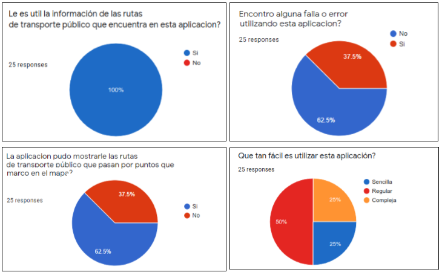

¿Cómo utilizar el estándar GTFS para mejorar el acceso a la información de transporte público en ciudades con sistemas de transporte informal?
1.3 Objetivo general
Adaptar el estándar GTFS en sistemas de transporte informal, para generar datos que puedan ser utilizados en una herramienta trip planner.
1.4 Hipotesis
El uso del estándar GTFS en el sistema de transporte informal de la ciudad de La Paz permitirá la implementación de una aplicación trip planner, para generar las posibles rutas de transporte público entre dos puntos geográficos dados.
2. Marco Teorico
2.1 Estandar GTFS
2.1 Estandar GTFS
2.2 Trip Planner
2.3 Metodologia de desarrollo FDD
3. Marco Aplicativo
3.1 Definicion de features
Feature
1
Representación de rutas de transporte informal
2
Adición/Edición de rutas de transporte informal
3
Almacenamiento de rutas de transporte informal
4
Generación del feed GTFS
5
Trip planner
3.2 Diseño de features
3.2.1 Representación de rutas de transporte informal
Una ruta de transporte informal tiene muchas posibles paradas. Registrando solo una cantidad de estas.
3.2.2 Adición/Edición de rutas de transporte informal
3.2.3 Almacenamiento de rutas de transporte informal
3.2.4 Generacion del feed GTFS
3.2.5 Trip Planner (backend)
3.3 Construccion de features
3.3.1 Representación de rutas de transporte informal
3.3.2 Adición/Edición de rutas de transporte informal
3.3.3 Almacenamiento de rutas de transporte informal
3.3.4 Generacion del feed GTFS
3.3.5 Trip Planner (web client)
4. Pruebas y resultados
4.1 Adición/Edición de rutas de transporte informal
4.2 Almacenamiento de rutas de transporte informal
4.3 Generacion del feed GTFS
4.4 Trip Planner (web client)

5. Conclusiones
GTFS y transporte informal.
Archivos geojson para representar rutas de transporte informal.
OpenTripPlanner funcionando con un feed GTFS informal.